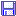
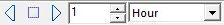

Barra principal

Grup fitxers
 Obre un mapa desat Drecera per a Arxiu > Obre.
Obre un mapa desat Drecera per a Arxiu > Obre.-  Desa el mapa actual Drecera per a Arxiu > Desa-ho com....
- Imprimeix el mapa Drecera per a Arxiu > Imprimeix.

Visió nocturna
 Color de visió de nit Drecera per a Veure > Visió de nit.
Color de visió de nit Drecera per a Veure > Visió de nit.

Grup finestres A
 Cascada Drecera per a Finestres → Cascada.
Cascada Drecera per a Finestres → Cascada. Divisió de pantalla vertical Drecera per a Finestres > Apila verticalment.
Divisió de pantalla vertical Drecera per a Finestres > Apila verticalment.


Grup edició
 Desfés el darrer canvi Drecera per a Edició > Desfés.
Desfés el darrer canvi Drecera per a Edició > Desfés.- Refés el darrer canvi Drecera per a Edició > Refés.

Grup zoom
 Aquí podeu canviar el camp de visió des de la barra de menú. També el podeu canviar fent girar la roda del ratolí (si la teniu). Podeu fer també zoom d'augment dibuixant un rectangle en el mapa amb el ratolí mantenint premut el botó esquerre, seguit d'un clic esquerre dins del rectangle dibuixat. També podeu desplaçar el rectangle arrossegant-lo amb el ratolí esquerre premut.
Aquí podeu canviar el camp de visió des de la barra de menú. També el podeu canviar fent girar la roda del ratolí (si la teniu). Podeu fer també zoom d'augment dibuixant un rectangle en el mapa amb el ratolí mantenint premut el botó esquerre, seguit d'un clic esquerre dins del rectangle dibuixat. També podeu desplaçar el rectangle arrossegant-lo amb el ratolí esquerre premut.
- +
 Zoom augment Drecera per a Veure → Zoom augment (divideix el camp de visió per 2).
Zoom augment Drecera per a Veure → Zoom augment (divideix el camp de visió per 2). - - Zoom disminució Drecera per a Veure → Zoom disminució (multiplica el camp de visió per 2).
- Camp de visió Variació contínua del camp de visió per mitjà d'un cursor, entre 1 minut i 360 graus. És una drecera per a Veure → Camp de visió. (Fixa manualment el camp)

Grup magnitud
Aquest grup de botons us possibilita incrementar o disminuir el nombre d'objectes (Estels i cel profund) mostrats en el mapa. Per cada clic sobre les icones canviareu la magnitud dels objectes per un valor de 0.5
 Més estels Afegeix 0.5 al nombre de la magnitud visual límit dels estels per mostrar-ne més.
Més estels Afegeix 0.5 al nombre de la magnitud visual límit dels estels per mostrar-ne més. Menys estels Substrau 0.5 al nombre límit de magnitud visual dels estels per mostrar-ne menys quantitat.
Menys estels Substrau 0.5 al nombre límit de magnitud visual dels estels per mostrar-ne menys quantitat. Més cel profund Afegeix 1 al nombre de la magnitud visual límit dels objectes de cel profund per veure'n més.
Més cel profund Afegeix 1 al nombre de la magnitud visual límit dels objectes de cel profund per veure'n més. Menys cel profund Substrau 1 del nombre de la magnitud visual dels objectes de cel profund per mostrar-ne menys quantitat.
Menys cel profund Substrau 1 del nombre de la magnitud visual dels objectes de cel profund per mostrar-ne menys quantitat.


{kind=link}
{kind=link}
{kind=link}
{kind=link}
Aquestes icones són dreceres per al menú Carta → Nombre d'estels i Nombre objectes cel profund.
===== Grup recerca =====
 No hi ha cap més manera de fer aquesta acció.
No hi ha cap més manera de fer aquesta acció.
L'àrea d'entrada correspon a una recerca senzilla; heu d'entrar l'identificador de catàleg (id) i l'identificador de l'objecte (id) en el catàleg. Es manté una llista dels objectes buscats.
 L'accés a la recerca avançada és detallat aquí.
L'accés a la recerca avançada és detallat aquí.
===== Posició =====
Aquesta icona  és una drecera per Veure → Posició.
és una drecera per Veure → Posició.
Feu-hi clic i podreu definir fàcilment i ràpidament el centre del mapa tant en coordenades equatorials com en altazimutals, el camp de visió i la rotació del mapa, tal com es descriu aquí.
===== Llista d'objectes =====
 Llista dels objectes és una drecera per Veure → Llista dels objectes.
Llista dels objectes és una drecera per Veure → Llista dels objectes.
Feu-hi clic i obtindreu una llista en forma de catàleg de tots els objectes mostrats en el mapa. Vegeu Llista d'objectes per a més detalls.
===== Calendari =====
Feu clic a  És una drecera per a Arxiu → Calendari.
És una drecera per a Arxiu → Calendari.
===== Grup simulació de temps =====

És una manera més adient de modificar la data i l'hora que no pas Configuració > Data/Hora.
Amb les dues caselles podeu triar la unitat de temps i l'increment, variant-lo amb les fletxes a partir del moment actual. El quadradet entre les fletxes us retorna al moment actual (Data i hora del sistema).
=== Relacionat a: ===
Sistema de coordenades Quan voleu saber què és visible sobre l'horitzó en un moment donat i voleu veure la simulació del temps en efecte, el sistema de coordenades cal que sigui l'altazimutal. Hi ha diverses maneres d'aconseguir-ho. Per exemple, des del menú: Carta → Sistema de coordenades →Coordenades Alt-Az
Sistema solar Probablement voldreu simular moviment de planetes, asteroides o cometes en qualsevol sistema de coordenades. Us cal que siguin visibles. Aquí hi ha algunes maneres. Des del menú: Carta → Mostra els objectes i marqueu les opcions “Mostra els planetes”, “Mostra els asteroides” i “Mostra els cometes. O feu actiu l'estat de visió d'aquest elements fent clic a la icona apropiada en la barra d'objectes.
===== Grup telescopi =====
*  Connecta Drecera per a Telescopi > Connecta
*
Connecta Drecera per a Telescopi > Connecta
*  Sincro Drecera per a Telescopi > Sincro
*
Sincro Drecera per a Telescopi > Sincro
*  Ves a (goto) Drecera per a Telescopi > Ves a (goto)
Ves a (goto) Drecera per a Telescopi > Ves a (goto)
===== Grup finestres B =====
* Si teniu més d'un mapa, però l'actual a pantalla completa, aquesta icona recupera la distribució de mapes anterior.
*  Tanca Tanca la carta activa (si n'hi ha més d'una oberta). Drecera per a Arxiu > Tanca el mapa**. (Només en el cas que n'hi hagi més d'un obert.)
Tanca Tanca la carta activa (si n'hi ha més d'una oberta). Drecera per a Arxiu > Tanca el mapa**. (Només en el cas que n'hi hagi més d'un obert.)
{kind=link}
{kind=link}